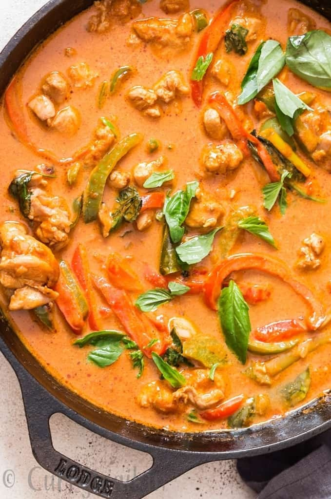

Panang Curry

Panang is spelled in various ways: phanaeng, phanang, panaeng or panang, or as penang, or Pulau Pinang in Malay. This red curry originates from an island located off the west coast of Malaysia.
Panang curry is usually less spicy as the paste is made with lesser red chilies compared to Thai curries. Peanuts (in ground form mostly) and coconut milk makes the curry sweeter than other Thai curries.
Panang curry is richer, sweeter and creamier than the more herbaceous Thai curry.
Ingredients
- Panang Curry Paste
- Vegetables
- Protein
- Coconut Milk
- Natural Peanut Butter
- Coconut Oil
- Fish Sauce
- Nutmeg
- Palm Sugar
- Thai Basil
Directions
- Heat skillet or deep bottom pan. Add coconut oil and wait until oil melts.
- Sauté finely chopped onions in hot coconut oil until onion is translucent.
- Add minced garlic, red and green bell peppers. Cook for 2 minutes constantly stirring.
- Add roughly chopped galangal, lemon grass.
- Push veggies to one side of the pan. Add washed and cleaned chicken things. Cook until chicken browns a bit and changes colour.
- Mix chicken and veggies together. Continue cooking it for a minute more.
- Again gather chicken veggie mix to one side of the pan. Scoop out Thai Panang curry paste ( or Thai red curry paste) to empty side of pan. Stir the paste and fry it in oil. Wait until oil separates from the paste.
- Stir in unsweetened peanut butter, fish sauce and palm sugar. Take Kaffir lime leaves on your palm and crush it. Add crushed kaffir lime leaves to the pan.
- Cook stirring regularly for 2 minutes.
- Simmer flame. Pour in thick coconut milk. Give it a good stir.
- Let it cook for 5-7 minutes or until chicken is fully cooked.
- Add few Thai basil leaves. Stir.
- Turn off flame. Thai Chicken Panang Curry is ready. Its great when served with steamed jasmine rice. You can also serve Thai Panang curry with rice noodles.